This chapter will deal with errors that are easy to make and thus occur quite frequently. Of course you will rarely get
a totally error-free waypoint set in the first attempt. Many errors cannot be seen when looking at the waypoints alone.
In order to spot them, you need to start a game and watch your bots.
However, there are also lots of stupid errors that can be avoided right from the start - if you know them. The most important
ones will be listed in the following paragraphs. Read this section carefully and do all bot players a favour:
Don't repeat what so many others have done wrong already!
This document is structured to make it correspond to the main waypointing documentation. In that documentation, you learnt
about waypoints first, then about connections, radii and flags. Accordingly, in this document waypoint-related errors will
be dealt with first, followed by connection errors, and so forth.
- Waypoint-related errors
Unwaypointed areas
Many waypointers are too lazy or too sloppy to waypoint the entire map. Or maybe they think that with PODBot MM, bots are
limited to a few key routes anyway, with more waypoints only causing confusion. This is wrong!
Bots can take advantage of the entire map, and it's much more fun if you know they can be anywhere where players can go. Besides,
unwaypointed areas can cause bots to get stuck! During regular waypoint navigation, bots will indeed stick to the waypoints
and just ignore unwaypointed areas. But please remember that in some situations (mainly in combat), bots will switch to
unwaypointed movement! Thus, a bot engaged in a firefight might move into an unwaypointed area while following the enemy
or retreating from combat. As soon as the bot switches back to waypointed navigation (because he has killed the enemy
or the enemy has fled), he might find himself in an area without any waypoints to navigate! Or a bot might fall down from
a ledge and into an unwaypointed area. In such situations, the bot is very likely to get stuck. He is trying to find and reach
the closest one, but if there is no any visible waypoint for the bot - it may get stuck.
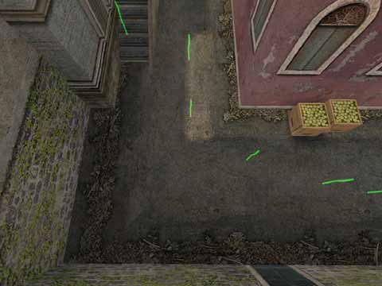
A harmless case... still, there is no reason to leave so much space unwaypointed.
Note:
There are situations that make leaving out a certain area acceptable. For example, if a passage is just not passable for bots,
Then of course, it's better not to waypoint that passage at all. In any case, the more secluded and difficult to reach the
unwaypointed area is, the less risk of bots getting stuck you'll have to face. If you leave out a balcony that can only be
reached by climbing up a ladder, you ought to be quite safe if you don't waypoint the ladder and the balcony. Still, you should
never do this as long as you think that it might be nice to see a bot up there once in a while. Don't leave out areas just
because you are plainly too lazy.
Unnecessary waypoints
In the following example screenshot you can see some totally superfluous waypoints. While waypointing this area, the waypointer
totally ignored the fact that there is already a connection from the waypoint in the foreground to the one that's located furthest
in the background. This connection makes the two waypoints in the middle obsolete. In this area of the map, you can only go through
the door or back. Placing more waypoints there doesn't give the bots more alternatives.
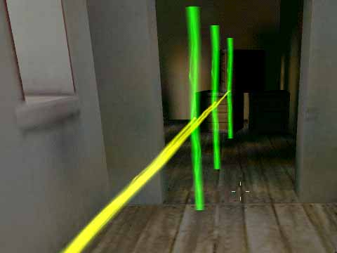
Only the waypoint in the far background is needed, the other two are superfluous.
As you see, there is just one passage anyway, so connections from point to point would have been sufficient. Having connections
overlap makes bot navigation more complicated and increases the risk of bots getting stuck in each other, when they think that they
are taking different paths. But if these paths overlap so heavily, there won't be any real difference.
Avoid this by not using autowaypointing, by carefully choosing the optimal APMD setting for each area of the map or at least by deleting
unnecessary waypoints or connections.
Waypoints too close to each other
Apart from the fact that two waypoints at such a close distance from each other are unnecessary, they can cause problems by messing up
the bots navigation. This is due to the fact that there's a certain radius hardcoded into the bot dll (this radius has nothing to do with
the waypoint radius you can set!). For example, a bot considers normal waypoints to be reached when it is inside a radius of 50 Units from
the center of the waypoint. Now what happens if two waypoints are so close to each other that their hardcoded "reached" radii
overlap? Let's take the following picture as an example:
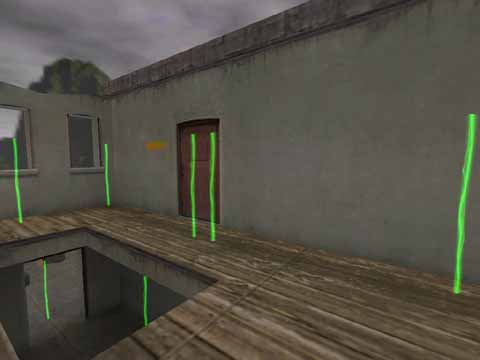
Never place waypoints that closely together!
As soon as a bot has reached one of the depicted waypoints, it automatically thinks (in the same frame) it has reached the other one
as well - without moving! This is obviously bad for precise movement.
Furthermore, when two bots have the same waypoint as a goal, the dll makes them try to find alternative waypoints. If one of the two
depicted waypoint is already occupied by another bot, an approaching bot will try to reach the other waypoint instead. However, since
both waypoints are so close to each other, both bots will probably collide and get stuck.
Bad use of crouched waypoints
In order to use crouched waypoints correctly, it is important to know how bots react to these waypoints. Let's have a look at
the following picture - the waypointer obviously wanted to get his bots through this half-closed door:
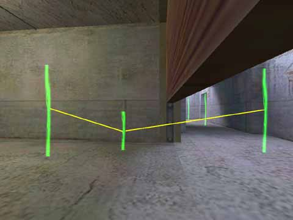
At a first glance, everything looks perfect here... but it isn't.
Now what's wrong here? Well, bots will crouch as soon as they approach a crouched waypoint, but not when they leave one. To stay with
the example picture, a bot that approaches this door from the left side of the screen will crouch down as soon as it has reached
the standing waypoint on the left. The bot will know that by following the connection towards the middle waypoint, it will reach
a crouched waypoint. Thus, it crouches and crouch-walks until it has reached the middle waypoint. Once the bot has reached the middle
waypoint, it will know that the next waypoint in the line is a standing waypoint, so the bot will stand up- and run head first into
the door.
The solution to the problem is easy: On the right side of the door, another crouched waypoint must be inserted. Then bots will not get up
before they are on the other side of the door. The way it is waypointed now, bots will eventually make it through the door, but it's not
very clean. Besides, at such places you are well-advised to set APMD (AutoPath Max Distance)to the lowest setting or even draw all
connections manually, because if there is a connection between the standing waypoints at either side of the door, all your nice crouched
waypoints will not help.
Badly placed important waypoints
Those Team Specific Important waypoints sure are a nice feature, but many waypointers obviously don't know how to take advantage
of this feature. Look at the following screen:
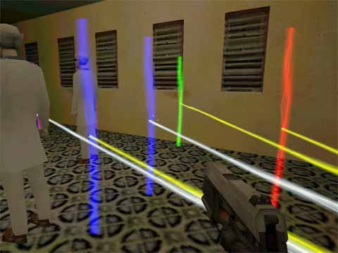
Both the CT Important waypoints and the T Important waypoint are badly placed.
This "masterpiece" is actually an ideal example to show all relevant errors about team-specific important waypoints in one
single picture. Let's have a look at a few facts:
- First error: Why two Counter-Terrorist Important waypoints? One is enough. Those important waypoints
are used to get bots to patrol various crucial areas. Concentrating several of them in one single area is useless.
- Second error: Important waypoints for both teams close to each other. Important waypoints should be used to show each team some
important positions. If important waypoints for both teams are right next to each other, players of both teams will brainlessly rush
to the same position and start a deathmatch instead of showing some tactical gameplay.
- Third error: Important waypoints near map goal. Look at the picture, the hostages are right next to the important waypoints.
The hostages are the map goal - CT bots will go there anyway. It's their mission, for crying out loud! A map goal point
is an important point itself, and not only for the CT team. The Terrorists, too, will repeatedly
check for the hostages, so not even they need an important waypoint here. (On a De_ map, the same principle applies, just with switched
roles.)
On a side note:
Those stupid connections you can see in the picture really take the cake... at least this way you see how much you can do wrong in one
lousy room.
- Connection-related errors
Missing Connections At Ladders Or On Stairs
Although the editor checks for unconnected waypoints whenever you save your work, it will only find those points that cannot be
reached at all. However, you might have a spot in your map where one connection is missing, but there's another way to reach the point
in question. This error can easily occur at ladders or on stairs.
When waypointing a ladder, a one-way connection from the first normal waypoint near the top of the ladder to the upper ladder waypoint
is drawn automatically. However, the upper ladder waypoint in most cases remains unconnected with the nearest normal waypoint around,
you must add this connection manually. If you forgot to do so, bots will only be able to climb down the ladder, but they won't be able
to get up. Now if there's a longer way to reach that raised area the ladder leads up to, the bots can still go there (and the editor
won't report an error!). However it might take them ages and spoil the overall gameplay on that map. So keep an eye on those
connections!
Pretty much the same applies to staircases: If you do not (or cannot) place waypoints right in the middle of individual stairs, but
rather insert them over the edge between two stairs, so that they end up hovering in the air, chances are that there will only be
a 1-way connection down to the next waypoint on the stairs, but no connection up. Obviously, the consequences will be the same as
with badly waypointed ladders. However, with stairs you can easily overlook a missing connection because under the blue radius bars,
the yellow lines for two-way connections appear white anyway. Thus, it can be hard to tell if the line just appears white, but is
a perfectly working 2-way connection or if it actually is white, meaning that it's a 1-way connection only. When waypointing stairs,
get into the habit of strafing around each freshly placed waypoint a bit to see if everything is in order.
Wrong Connections
Especially when waypointing ledges and drawing jump connections, you may experience totally undesired connections being drawn
automatically. In the example pic you can see a one-way connection up to the wall.
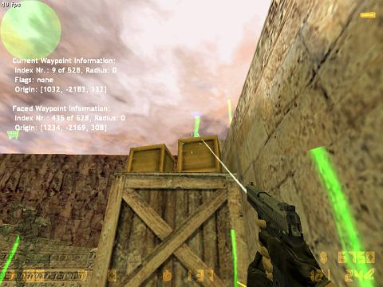
Ouch! This connection will cause bots to get stuck forever.
This is one of the worst errors that can appear!! When bots try to follow this connection, they will get stuck in the wall forever.
So take care to remove such connections or even better to prevent them in the first place.
So how and why do these errors occur and how can you prevent them form happening?
The error in the picture occurred when the waypointer made a jump connection. Now the waypoint editor has the habit of adding connections to
the jump start and end waypoints when you make the jump. This is easy to avoid, however: When you draw jump connections, simply turn
auto-connection off. This way you can make sure that only the jump connection will be drawn, nothing
else. If you forgot to do so, for example when you were creating a bunch of jump connections to get bots on top of a stack of crates, walk
around the stack on ground level and carefully check for wrong connections. Watch for yellow lines!
Another place where such errors tend to occur is when you waypoint narrow ledges. In such cases, sometimes waypoints float in the air above
a street or whatever. This is when a wrong connection from a waypoint in the street up to one of the waypoints on the ledge can appear.
This, too, is easy to avoid: When you want to waypoint a ledge, wait until you have the area below the ledge waypointed completely,
you might need high APMD settings there. Then you can go up the ledge and decrease the APMD setting to a value that makes it technically
impossible to have connections between the ledge and the waypoints on the ground below it. Of course, the waypoints along the ledge will
have to be closer together that way, but that's really ok for ledges. If you forgot to follow this procedure (and we all do sometimes),
walk along the ledge and look carefully if you see any undesired connections between the ledge and the waypoints on the ground. Or you
can just turn apmd off when waypointing the ledge and connect everything manually.
Sloppy Connections Through Doors And Around Corners
This must be one of the most common errors in the whole waypointing world. Even in absolutely simple passages you are likely
to encounter connections that cut a corner so closely that bots are bound to bump into the corner. Or you can see a doorway that is
waypointed so badly that bots will bump into walls all the time before they finally manage to struggle through the door! See this example
picture:
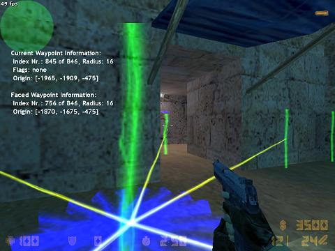
If you want your bots to have problems with doorways, follow this example...
You can try such a connection by walking exactly on the yellow line: If you bump into something, the connection is bad. With the
depicted connection, you would bump into both sides of the doorway.
Since this is so easy to avoid, I don't understand why it keeps happening, but it sure does. In most cases I bet that waypointers just
didn't pay attention to the connections that were drawn by the editor. They just placed some waypoints anywhere and didn't care about
the connections at all. The same happens with corners. Some waypointers merrily add waypoints around corners and totally forget to check
if some of these waypoints accidentally got connected in a way that will make bots bump into the corner.
Around doorways, make sure that you place the waypoints on both sides exactly in the middle of the doorway. If the connection through
the doorway (1) goes right through the middle, exactly half way between each side and (2) crosses the doorway in an angle of exactly 90
degrees, everything should be fine.. At corners, check that there is sufficient space between the corner and the nearest connection.
Overlapping Connections
Check out the following example screen, the normal waypoint in front of the vent access is connected with all crouched waypoints
inside the vent.
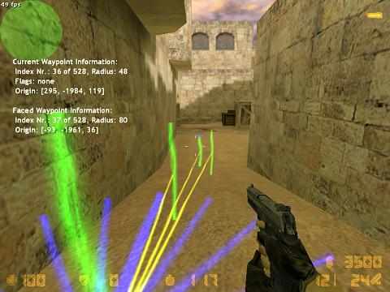
A lot of unnecessary connections
Now there was a similar pic in the section "unnecessary waypoints". Isn't this really the same and could be solved by deleting
the first two crouched waypoints? One thing is for sure,it will cause the same problem that I described in "Unnecessary waypoints".
But in the end, this case here is still a bit different, because the waypoints themselves are placed perfectly. It's good to have small
distances between crouched waypoints, and that crouched waypoint directly in front of the vent access will ensure that bots going out
of the vent will stay crouched until they have left the vent behind. That's why in this case the solution is not deleting waypoints,
but removing the overlapping connections. Make sure that in such waypoint setups, the first waypoint in the row is only connected to the
second one and the second one with the third etc. This is quite easy to do if you just lower APMD to an appropriate distance.
No Use Of Jump Connections
This is another quite frequently appearing error. In many places, you will find normal 2-way connections leading on top of an object
(a crate, a barrel or whatever), just like in this screenshot:
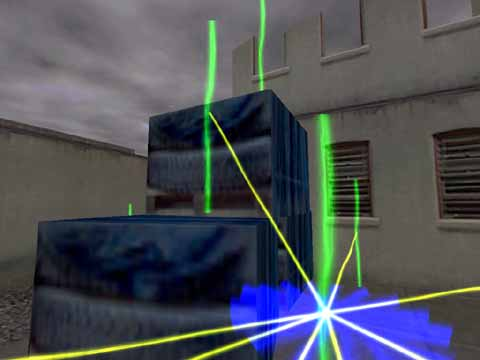
A jump connection would be ideal here.
Now it is true that bots will get up that stack of crates eventually by following these connections. However, they will first bump into
the crate. Then, after realizing that they cannot reach the next waypoint by simply walking towards it, they will eventually try jumping up.
The same procedure will repeat for the next crate, and all in all your bots will look very clumsy. In fact, they might even fall down while
trying to get to the topmost crate. In their struggle to get up, they may well try walking a few steps left and right to get around what's
blocking them. Doing this, they could take a step too far and land on the ground.
However, you can make their movement precise and efficient by using jump connections in the first place.
- Radius related errors
As you know, the radius of a waypoint (also called "wayzone") indicates how precisely a bot will navigate around that point.
Now PODBot calculates all radii automatically, and many waypointers think they can rely on that calculation and restrict their work to
placing waypoints.
As you may already have guessed, this is of course wrong. The radius calculation gets influenced by high obstacles near the waypoint, so
if there's a wall at 64 units from a waypoint, the radius will automatically be set to a maximum of 64 or even less. However, if there
are only low obstacles around the waypoint, the wayzone is likely to go over these obstacles, resulting in bots bumping into them.
The worst part, however, is yet to come. If there's an abyss, a ravine, a hole in the ground or whatever, the radius calculation is not
affected by it. So the wayzone will go over that abyss, bots will think they can go there and fall down. This is shown in the example
screenshot, the wayzone there should be really small, if not zero:
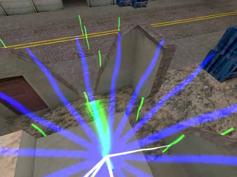
Too big radius, bots can fall down
Another place where you often find too big radii is around narrow doorways, breaches in a wall or other not-so-spacious passages.
Imagine you have a wall and a narrow breach in it (24 units wide or something). Now if the waypoints on both sides of the wall are far away
from high obstacles (such as the wall itself), their radii will automatically be set to a value much higher than the width of the breach.
Now if bots want to go through that passage, they will think that they can use those huge wayzones assigned to the two waypoints in front
of the wall and behind of it. As a result, they are very likely to run head first into the wall left or right of the breach. Similar
to what would happen in this picture below:
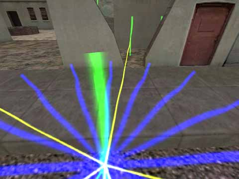
Too big radius, bots will bump into the wall
Get into the habit of monitoring waypoint radii and lowering them manually whenever necessary.
- Flag-related errors
NoHostage Flag Missing (cs-type maps only)
On CS_ type maps, it's very annoying when a CT bot activates the hostages and then loses them on its way to the rescue zone. That's
why it's so important to show bots where hostages won't be able to follow them, thus forcing CT bots with hostages to choose passages
where the hostages won't get stuck. Remember to block ladders, vents, windows and jumps. I prefer to block all camp waypoints as well
because I don't want to see a CT bot with hostages have a sitout in some dark corner while the last seconds are ticking away...
When you are in doubt whether hostages will make it through a passage or not, start a game without bots, choose CT team and lead
the hostages around the map to see where they follow and where they don't. Especially stairs can be problematic.
Bad use of button flags
A button flag doesn't have to be placed wherever there is a button. Bots check for obstacles and buttons automatically. If you
have a door that stays open once it is opened by using a button, you won't need a button flag (unless - for example - You want the bot
closes the door after passing the door). The first bot to approch the door will detect that it's closed and push the button. All it
takes is a connection setup that will force the bot to pass by near the button before going through the door. Once
the door is open, the next bot will know that there is no obstacle, ignore the button and just walk through.
If you had a button flag at such a door, the second bot would push the button again (thus closing the door again) and run into the closing
door (but it's not a big problem, because this second bot will find the button and it will open the door anyway). But it's better to
not add a button flags near any doors. For auto=closing doors th ebot will find the button without the button flag - so there is
no need to add it there. The only places You may need to add button flag are light- switches and the door you want the bot close it.
NOTE:
These rules apply to buttons that need to be pushed (by pointing at them and hitting the "use" key). If the "button"
is actually a small area you just have to enter in order to activate a door or whatever, all it takes is setting up connections in a way that
bots go through this area. You can think of such areas like invisible little touchplates in the floor - obviously, you must make your bots
walk over them to make them take effect...
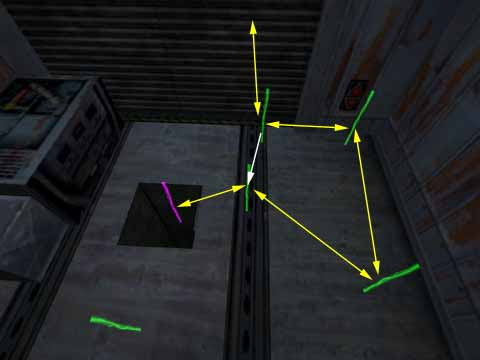
Waypoints around a button-triggered door; connections shown as arrows.
This picture is meant to show the principle; I added some arrows to make the connections visible because correct connections are very
important here. As you probably guessed already, those yellow, two-headed arrows represent bi-directional connections, whereas the
single-headed white arrow represents a one-way connection that leads into the direction indicated by the arrowhead. Here you can see that
it was made it impossible for bots to come climbing up that shaft and go right through the door - because they would get stuck! Instead,
they have been forced to pass by the button first, and they have been forced also to keep them as far away from the door as possible
before they reach the button. What's the result?
Well, bots will now come out of the shaft, go to the button, and detect that one of the next connection will go through something they
cannot pass.So they will search for something that might remove this problem and hopefully push the button. As soon as the button gets
activated, the door will open and the bot will be able to go through the open doorway.
The axample above is not so bad as the next one - old waypoints for podbot 2.5 they had the button flag everywhere there was something
you could push - including cameras. If the bot is forced to push "use" button near some camera, it more than likely will get stuck,
because there is no code in bot to use the camera. Pushing the button will do no effect for it, so it may get confused.
The worst situation is - when you accidently put the button flag on some waypoint near some area where there is nothing "pushable".
The bot is forced to push the button - but there is no button - so the bot will get confused.
Phew... that was a huge amount of theory! To put all this into practice, you will need... practice!  Seriously: You will discover that many maps require individual solutions, and in some cases the only way to get your waypoints to work
perfectly is by trying out different waypoint layouts. But no matter if you get everything to work in the first run or if you need to make
adjustments: A good configuration will help you a lot! If you have configured the waypoint editor in a way that enables you to access all
its functions quickly and easily, you will be able to work very efficiently.
Seriously: You will discover that many maps require individual solutions, and in some cases the only way to get your waypoints to work
perfectly is by trying out different waypoint layouts. But no matter if you get everything to work in the first run or if you need to make
adjustments: A good configuration will help you a lot! If you have configured the waypoint editor in a way that enables you to access all
its functions quickly and easily, you will be able to work very efficiently.
The next section will deal with the configuration of the waypoint editor - make sure you read it, or you won't be able to take advantage
of all the new great features of the new editor!
So click on 'Waypoints - Useful keys binding' and get into it!
|